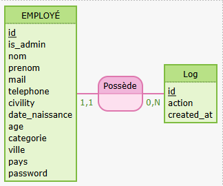

Documentation du Projet : Intranet "Maison des Ligues"
1. Introduction au Projet
Ce projet consiste en le développement d'une plateforme Intranet pour une société de taille moyenne en pleine expansion, la "Maison des Ligues". L'objectif principal est de faciliter et d'encourager les relations entre collaborateurs en interne, suite au récent recrutement de nombreux nouveaux membres.
En tant que développeur Front-End, la tâche a été de prototyper et développer la partie frontale de cette plateforme Intranet.
2. Stack Technique
Le projet est développé en utilisant les technologies suivantes pour la partie front-end:
- HTML
- CSS
- PHP Laravel
3. Fonctionnalités de la Plateforme
La plateforme offre différentes fonctionnalités selon le type d'utilisateur :
3.1. Utilisateur Standard (Collaborateur)
Un collaborateur standard dispose des fonctionnalités suivantes :
- Connexion au Système : Accès via son login et mot de passe.
- Page d'Accueil Personnalisée : Après connexion, l'utilisateur est dirigé vers une page d'accueil lui présentant un de ses collaborateurs au hasard.
- Découverte de Collaborateurs : Un bouton "Dire bonjour à quelqu'un d'autre" permet d'afficher un autre collaborateur au hasard.
- Liste des Collaborateurs : L'utilisateur peut se déplacer sur la page de Liste des collaborateurs de la société via le menu. Les collaborateurs s'affichent sous forme de fiches, avec toutes leurs caractéristiques.
- Filtrage et Recherche : La page de liste doit également permettre un affichage avec un système de filtres par nom, localisation (ville/pays) et catégorie.
- Modification du Profil Personnel : L'utilisateur peut accéder à une page de modification de ses informations personnelles (incluant le login/mot de passe) en cliquant sur son image de profil dans le header.
- Déconnexion : L'utilisateur peut se déconnecter, après quoi les pages précédentes (accueil, liste) ne sont plus accessibles.
3.2. Administrateur
L'administrateur est un utilisateur standard, disposant de privilèges supplémentaires. Il peut:
- Ajouter un nouveau collaborateur.
- Modifier un collaborateur existant.
- Supprimer un collaborateur existant.
Des éléments spécifiques pour l'administrateur incluent :
- Accès à un lien pour "Ajouter" un nouveau collaborateur dans sa barre de menu.
- L'affichage d'une fiche d'un utilisateur lui propose 2 boutons supplémentaires "Éditer" et "Supprimer".
4. Modèle Conceptuel de Données (MCD)
Le cœur de la plateforme repose sur une table de "collaborateurs" (qui correspond au modèle `User` dans le code Laravel). Voici les attributs principaux de cette table :
- `phone` : Numéro de la ligne directe.
- `birthdate` : Date de naissance.
- `city` : Ville où le collaborateur travaille.
- `country` : Pays où le collaborateur travaille.
- `photo` : Une URL valide vers une image en ligne.
- `service` : Service dans lequel travaille le collaborateur ("Marketing", "Client", etc.).
- `isAdmin` : Un booléen indiquant si le collaborateur est administrateur de la plateforme.
Pour les tests, le seul administrateur du set par défaut est `admin@example.com` avec le mot de passe `password`.
MCD
5. Contraintes Techniques et Gestion du Projet
Le projet a été développé en respectant les bonnes pratiques de gestion de version :
- Vous veillerez à travailler avec Git.
- Le travail effectué tout au long de la semaine via des commits réguliers et correctement titrés.
Le code source du projet est disponible publiquement sur un repository GitHub :